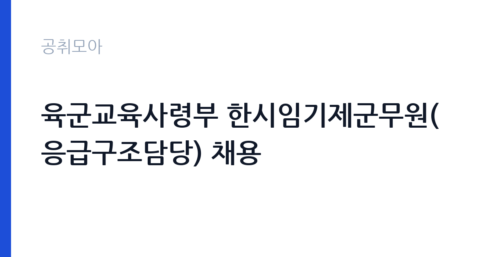

[국가기관] 육군교육사령부 한시임기제군무원(응급구조담당) 채용
국방부 국군조직 육군 · 전남 · 마감 2026-10-06 (D-14) · 출처 나라일터

한눈에 보는 모집 조건
| 기관 | 국방부 국군조직 육군 |
|---|---|
| 공고명 | 육군교육사령부 한시임기제군무원(응급구조담당) 채용 |
| 고용형태 | 임기제 |
| 근무지 | 전남 |
| 게시일 | 2026-09-23 |
| 마감일 | 2026-10-06 (D-14) |
지원자격, 이렇게 읽으세요
- 8호 1명
- 접수 ~2026-10-06 마감
- 세부 조건은 원문 공고문 확인
모집 분야는 응급구조담당이며 선발 직급은 한시임기제 8호입니다. 자격요건의 세부 내용은 채용 공고문 참조로 안내되어 있어, 원문을 직접 확인하셔야 합니다. 유사 공고의 사례를 보면 응급구조사 2급 이상 자격이 필수로 요구되는 경우가 많았으므로, 자격증 보유 여부를 먼저 점검하시기 바랍니다. 한시임기제는 휴직자의 복귀 등 사유가 해소되면 임용이 종료되는 형태이므로, 근무 기간의 조건을 원문에서 정확히 확인하시는 것이 중요합니다. 결격사유와 제출서류 목록도 원문에서 빠짐없이 살펴보시기 바랍니다.
이 공고의 포인트
첫 번째 포인트는 응급구조사 자격 보유자에게 열린 군무원 채용이라는 점입니다. 민간 병원과 구급대 외에 군 의료기관이라는 새로운 근무 경로가 될 수 있습니다. 두 번째로 한시임기제는 휴직대체 성격이라 근무 기간이 한정되지만, 그만큼 채용 절차가 비교적 단순하고 빠르게 진행되는 편입니다. 세 번째로 육군교육사령부는 대규모 교육훈련이 이루어지는 부대라 응급의료 수요가 꾸준하며, 실무 경험을 집중적으로 쌓기에 좋은 환경입니다. 기간의 한계를 이해하고 경력 관리에 활용하려는 분께 적합합니다.
전형은 어떻게 진행되나
전형은 채용 공고문에 안내된 서류를 작성해 채용부대로 등기로 발송하는 방식으로 시작됩니다. 이후 서류심사와 면접을 거쳐 최종 합격자를 선발하는 구조로 보이며, 세부 일정은 원문 공고문에서 확인하시기 바랍니다. 등기 발송 시에는 마감일 도착 기준인지 소인 기준인지를 반드시 확인하시고, 여유 있게 발송하시기 바랍니다. 서류에 기재한 자격증과 경력은 증빙서류로 입증되어야 하므로, 응급구조사 자격증 사본과 경력증명서를 미리 준비하시기 바랍니다.
원문에서 확인한 전형 방식
○ 모집분야 : 응급구조담당 ○ 선발직급 : 한시임기제 8호 ○ 고용형태 : 휴직대체 ○ 자격요건 : 채용 공고문 참조 ○ 접수기간 : 2026년09월23일 ~ 2026년10월06일 ○ 응시방법 : 채용 공고문 내 관련 서류 작성 후 채용부대로 등기 발송 ○ 문의처 : 042-878-6832
이런 분께 추천해요
- 응급구조사 자격증을 보유하고 군 의료 현장에서 일하고 싶으신 분
- 휴직대체 기간 동안 실무 경험을 쌓으며 다음 진로를 준비하시는 분
- 교육훈련 부대의 응급의료 지원 업무에 관심 있는 의료·보건 계열 전공자
지원 전 체크리스트
- 응급구조사 자격증의 유효 여부와 등급이 공고 기준에 맞는지 확인했습니다
- 한시임기제의 근무 기간과 종료 조건을 원문에서 확인했습니다
- 등기 발송 마감 기준과 채용부대 주소를 정확히 확인했습니다
- 자격증 사본과 경력증명서 등 증빙서류를 모두 준비했습니다
모집 일정과 제출 타이밍
접수 기간은 2026년 9월 23일부터 10월 6일까지 약 2주간입니다. 등기우편 발송 방식을 고려하면 추석 연휴 전후의 우체국 영업일과 배송 소요일을 감안해야 합니다. 가급적 10월 초 이전에 발송을 마치시는 것이 안전합니다. 서류심사 결과 발표와 면접 일정은 원문 공고문과 부대 안내에 따르시기 바랍니다. 문의처 042-878-6832로 접수 확인이 가능한지도 미리 물어보시기 바랍니다.
직무 이해하기: 국가기관
응급구조담당 군무원은 부대 내 응급환자 구조와 응급처치, 상담과 이송, 의무지원과 훈련 지원 업무를 맡습니다. 유사 공고의 직무기술을 보면 응급실과 구급차 내 물자와 장비의 감염관리를 포함한 폭넓은 의료지원 역할을 수행합니다. 육군교육사령부는 신병 교육과 각종 군사교육이 이루어지는 곳이라 훈련 중 부상과 응급상황에 대응하는 일이 핵심입니다. 의료·보건 계열 전공과 응급구조사 자격이 실무의 기반이 되며, 국가기관 소속 군무원으로 근무하게 됩니다.
자기소개서 작성 팁
응시서류의 자기소개와 경력기술에서는 응급현장 경험을 구체적으로 풀어쓰시는 것이 좋습니다. 출동 건수와 처치 사례, 이송 협업 경험을 수치와 함께 제시하면 설득력이 높아집니다. 군 조직의 특성을 이해하고 있다는 점을 보여주되, 과장된 표현은 피하시기 바랍니다. 휴직대체라는 근무 형태를 이해하고 지원한다는 점을 명확히 밝히면 신뢰를 얻을 수 있습니다. 자격증 취득 과정과 실습 경험을 통해 직무 적합성을 강조하시기 바랍니다.
면접 준비 포인트
면접에서는 응급상황 대처 능력을 직접적으로 검증하는 질문이 나올 수 있습니다. 훈련 중 심정지나 외상 환자 발생 시의 대응 절차를 단계별로 정리해 두시기 바랍니다. 군 조직에서의 복무 태도와 보안 의식에 대한 질문에도 성실하게 답변하셔야 합니다. 한시임기제의 기간제 성격에 대한 수용 의사를 묻는다면 향후 계획을 포함해 솔직하게 답변하시기 바랍니다. 체력과 교대근무 가능 여부도 미리 정리해 두시기 바랍니다.
급여·근무조건 읽는 법
보수 수준은 원문 공고문에서 확인하셔야 합니다. 한시임기제군무원의 봉급은 군무원보수 관련 규정에 따라 호봉별 금액이 정해지며, 8호의 경우 해당 규정의 봉급표가 적용됩니다. 군무원은 기본급 외에 정액급식비와 직급보조비, 명절휴가비 등의 수당이 지급되는 구조입니다. 정확한 월 지급액은 임용 시 호봉 산정에 따라 달라지므로, 원문의 보수 조건과 문의처 042-878-6832를 통해 확인하시기 바랍니다. 실수령액은 세금과 4대 보험 공제 후 금액임을 참고하시기 바랍니다.
자주 묻는 질문
- 한시임기제군무원은 어떤 신분입니까
휴직이나 파견 등으로 결원이 생긴 기간 동안 한시적으로 임용되는 군무원입니다. 해당 사유가 해소되면 임용이 종료되므로, 원문에서 근무 예정 기간을 반드시 확인하시기 바랍니다. - 응급구조사 자격이 반드시 필요합니까
유사 공고에서는 응급구조사 2급 이상을 필수로 요구한 사례가 많았습니다. 이번 공고의 정확한 자격요건은 원문 공고문에서 확인하시기 바랍니다. - 근무지는 어디입니까
채용부대는 육군교육사령부로, 전남 장성에 위치한 부대입니다. 세부 근무 부서와 근무 형태는 원문과 문의처를 통해 확인하시기 바랍니다.
함께 보면 좋은 공고
[국가기관] 과학기술정보통신부 전문임기제 다급(과학기술 인력양성) 경력경쟁채용 재공고 — 마감 2026-10-06[국가기관] 2026년 제5회 식품의약품안전처 공무원(임기제) 경력경쟁채용시험 공고 — 마감 2026-10-06[국가기관] 2026년 제7회 해양수산부 전문임기제 공무원(인공지능 기획) 경력경쟁채용시험 공고 — 마감 2026-10-02출처: 나라일터 공개정보를 바탕으로 공취모아가 정리한 안내글입니다. 모집 조건·일정은 변경될 수 있으니 지원 전 반드시 원문 공고문을 확인하세요. 본 글은 정보 제공용이며 합격을 보장하지 않습니다.